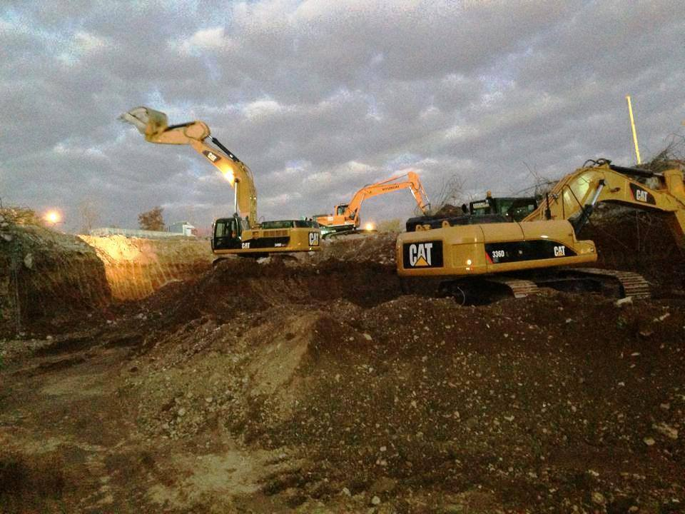

Agrega, beton ve asfalt üretiminde bağlayıcı maddelerle (çimento, bitüm) birleşerek yapıya hacim ve dayanıklılık kazandıran kum, çakıl, kırmataş gibi mineral kökenli granüler malzemelerdir. Beton hacminin yaklaşık %60-80'ini oluşturan agregalar, betonun maliyetini, işlenebilirliğini ve teknik özelliklerini doğrudan etkiler. Erzurum'da beton üretiminde kullanılan agregaların kalitesi, donma-çözülme direnci ve deprem dayanımı açısından hayati önem taşır.
Agrega Türleri (Üretim Şekline Göre)
Agregalar üretim yöntemlerine göre iki ana sınıfa ayrılır:
⛰️ Doğal Agrega
Doğal taş ocaklarından, dere yataklarından veya deniz kıyılarından çıkarılan, yalnızca yıkama ve eleme işleminden geçirilerek kullanılan agregalardır. Erzurum'da dere kumu ve doğal çakıl yaygın doğal agregalardır.
- Dere Kumu: Yuvarlak taneli, pürüzsüz yüzeyli, işlenebilirliği yüksektir. Ancak beton dayanımı için köşeli kırma kuma göre dezavantajlıdır.
- Deniz Kumu: Tuz (klorür) içerdiği için betonarme yapılarda donatı korozyonuna neden olur. Erzurum'da kullanılmaz.
🏭 Yapay (Kırma) Agrega
Taş ocaklarından patlatma veya mekanik kırıcılar ile elde edilen, keskin köşeli ve pürüzlü yüzeyli agregalardır. Beton dayanımı için doğal agregaya göre daha uygundur. Erzurum'da ME-KA İnşaat'ın kendi taş ocaklarında üretilen kırma taş agregaları, beton üretiminde yoğun olarak kullanılmaktadır.
- Kırmataş (Mıcır): Bazalt, kalker, granit gibi sert kayaların kırılmasıyla elde edilir. Yüksek dayanım gerektiren betonlarda tercih edilir.
- Yapay Hafif Agrega: Genleştirilmiş kil, perlit, pomza gibi hafif ve ısı yalıtımlı agregalardır. Erzurum'da çatı eğim betonu ve dolgu amaçlı kullanılır.
Agrega Türleri (Tane Boyutuna Göre)
| Sınıf | Tane Boyutu | Örnekler | Kullanım Alanı |
|---|---|---|---|
| İnce Agrega (Kum) | 0 - 4 mm | Doğal kum, kırma kum, taş tozu | Beton, sıva, şap, harç |
| İri Agrega (Çakıl/Mıcır) | 4 - 63 mm | Çakıl, kırmataş (1,2,3 no) | Beton, drenaj, dolgu, yol altyapısı |
| Çok İri Agrega | > 63 mm | Kaya parçaları, riprap | İstinat duvarı arkası, tahkimat |
1. İnce Agrega (Kum) Çeşitleri
- 0-2 mm Doğal Kum: Sıva ve şap için uygundur.
- 0-3 mm Kırma Kum: Beton üretiminde en yaygın kullanılan ince agregadır.
- 0-5 mm Taş Tozu (Filler): Asfalt üretimi ve ince dolgu işlerinde kullanılır.
2. İri Agrega (Mıcır/Çakıl) Çeşitleri
- 1 No Mıcır (5-12 mm): Beton agregası, bordür altı dolgusu.
- 2 No Mıcır (12-22 mm): Beton agregası, drenaj, filtre çakılı.
- 3 No Mıcır (22-32 mm): İstinat duvarı arkası, kaba dolgu.
- 4 No Mıcır (32-63 mm): Tahkimat, riprap, büyük dolgular.
Erzurum'da Agrega Kalitesi Neden Önemlidir?
Erzurum'un sert kış koşulları ve deprem riski, kullanılan agreganın kalitesini doğrudan yapı güvenliğine bağlar:
- ❄️ Donma-Çözülme Direnci: Agrega, su emme oranı düşük ve dona dayanıklı olmalıdır. Aksi halde beton yüzeyinde kabuk atma ve çatlaklar oluşur.
- 🧪 Alkali-Silika Reaksiyonu (ASR): Erzurum'daki bazı agrega ocaklarında reaktif silis bulunabilir. Bu durum betonda zamanla genleşme ve çatlamalara yol açar. Güvenilir ocaklardan temin edilmiş agregalar tercih edilmelidir.
- 📏 Tane Şekli: Yassı ve uzun taneler beton dayanımını düşürür. Köşeli ve kübik taneli agregalar daha yüksek dayanım sağlar.
Agrega Seçiminde Dikkat Edilmesi Gerekenler
- ✅ Temizlik: Agrega; kil, silt, organik madde ve yabancı maddelerden arınmış olmalıdır.
- ✅ Granülometri (Tane Dağılımı): Farklı boyutlarda agregaların dengeli karışımı, betonda boşluksuz bir yapı oluşturur.
- ✅ Su Emme Oranı: Yüksek su emme, betonun donma-çözülme direncini düşürür. Erzurum'da kullanılacak agregalarda su emme oranı %2'nin altında olmalıdır.
- ✅ Aşınma Direnci (Los Angeles): Özellikle yol ve endüstriyel zemin betonlarında kullanılan agreganın aşınmaya dayanıklı olması gerekir.
📞 Erzurum'da Kaliteli Agrega Tedariği İçin Bize Ulaşın
ME-KA İnşaat, kendi taş ocaklarından ürettiği yüksek kaliteli kırma taş ve kum agregalarıyla projelerinize güç katar. Ücretsiz fiyat teklifi alın.
✅ Kendi ocaklarımızdan + kaliteli üretim + uygun fiyat
Sık Sorulan Sorular
Agrega olmadan beton olur mu?
Hayır, agrega betonun iskeletini oluşturur. Agrega olmadan sadece çimento hamuru olur, bu da hem çok maliyetli hem de dayanıksızdır.
Hangi agrega daha iyi beton yapar?
Köşeli ve pürüzlü yüzeyli kırma taş agregalar, yuvarlak dere çakılına göre çimento hamuru ile daha iyi aderans sağlar ve daha yüksek dayanım verir.
Erzurum'da agrega fiyatları nasıl belirlenir?
Agreganın cinsi, boyutu, temin edildiği ocağın konumu ve nakliye mesafesine göre fiyat değişir.
İnce agrega (kum) ile taş tozu arasındaki fark nedir?
Taş tozu, kırma taş üretimi sırasında ortaya çıkan 0-5 mm arası malzemedir. İçerisinde çok ince filler malzemesi bulunur. Betonda kullanılacaksa yıkanması önerilir.